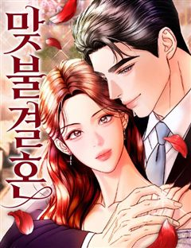

내가 버린 개에게 물렸을 때 같은 웹툰 추천

내가 버린 개에게 물렸을 때 · 김다
내가 버린 개에게 물렸을 때 재밌게 봤다면 이 웹툰들도 좋아할 거예요. 같은 장르이면서 고자극로맨스, 자극적인, 미스터리 같은 요소가 겹치는 작품을, 겹치는 요소가 많은 순서로 20개 골랐어요.
2026-10-08 기준 · 네이버웹툰·카카오웹툰·레진코믹스 · 성인 작품 제외
내 취향으로 직접 골라 추천받기 →-
1
 네이버웹툰
네이버웹툰내 남편의 정부에게
나, 레티시아 비올렛은 남편에게 헌신했지만, 모든 것을 잃었다. 그대로 목숨까지 잃을 뻔하던 찰나, 한 남자가 나타난다. 그 남자는 완벽한 복수를 이루도록 도와준다는데... "제 복수를 이루어 주겠다는 말... 꼭 지켜 주세요." 날 죽음까지 몰아넣…
고자극로맨스자극적인로판로맨스네이버웹툰에서 보기 → -
2
 카카오웹툰
카카오웹툰파옥
한민트 작가의 <파옥> 정식 웹툰화! 용은 잃어버린 생명의 구슬을 갈구하게 되어 있다. 따라서 용의 반려는 선택하는 것이 아니라 결정되어 있는 것이다. *** 제국 유사 이래 가장 짙은 용혈을 타고난 황제, 이스브란트. 피 내음과 비명들 사이에서 세…
고자극로맨스자극적인로판로맨스카카오웹툰에서 보기 → -
3
 네이버웹툰
네이버웹툰시한부 황후의 나쁜 짓
정략결혼이었지만 첫사랑이었다. 황제여서가 아니라 당신이어서 사랑했다. 휠체어를 탄 몸으로 스텔라는 제국과 남편을 위해 헌신했다. 그러나 돌아온 것은 처절한 죽음. 여신은 사지가 마비되어 죽은 스텔라를 회귀시켰다. 이번 생에서도 소꿉친구를 선택하는 남…
고자극로맨스자극적인로판로맨스네이버웹툰에서 보기 → -
4
 카카오웹툰
카카오웹툰오만한 후회
첫사랑이자 짝사랑 중인 순애보, 스텔라 엠브로즈. 무려 십여 년간 마음에 품어온 남자가 있다. 어느 날, 그 남자가 십 년 만에 수도로 돌아왔다. 스텔라는 우연히 기도하던 중 공작과 마주치게 되는데. 하지만 그는 경멸스러운 시선을 보내왔고, 상처받은…
고자극로맨스미스터리로판로맨스카카오웹툰에서 보기 → -
5
 네이버웹툰
네이버웹툰남편을 죽이고 저택을 상속받았다
몰락한 가문의 막내 이브니에. 신부로 팔려간 첫날 밤, 자신을 제물로 바치려는 신랑을 죽이고 벨페르 저택의 주인이 된다. 이 기이한 저택에서 살아남으려면 숨겨진 괴담을 찾아 종속시키는 것 뿐. 절망한 이브니에의 꿈에 정체불명의 남자가 나타나 그녀를…
고자극로맨스미스터리로판로맨스네이버웹툰에서 보기 → -
6
 네이버웹툰
네이버웹툰하는 사이
모두의 태양이자 주목받는 존재인 강시화, 그런 시화와 특별한 소꿉 친구 사이로 주변의 질투를 받던 이은서. 어느 날 홀연히 사라졌던 시화가 몇 년이 흘러 돌아왔다. 자꾸 흔들리는 은서의 마음과 도저히 짐작할 수 없는 시화의 행동. 우리는 특별한 사이…
고자극로맨스자극적인로맨스네이버웹툰에서 보기 → -
7
 네이버웹툰
네이버웹툰가장 썩은 것을 줄게
10년을 사귄 남자친구가 다른 여자와 하룻밤을 보냈다. 그래서 나도 그에게 상처를 주기로 결심했다. 고르고 골라서 가장 나쁘고 치사한 방법으로. 끝나가는 연애 끝에 다시 쓰여지는 이 관계. 단 한 번도 상상 해 본 적도 없는 최악으로 치닫는 상황 속…
고자극로맨스자극적인로맨스네이버웹툰에서 보기 → -
8
 네이버웹툰
네이버웹툰여동생은 오늘 밤 나를 간택한다
재벌가의 입양딸 아린은 새엄마를 향한 뒤틀린 애정을 품고 있다. 성인이 된 후, 우연한 사고로 자신에게 발칙한 능력이 있음을 깨닫는 아린. 능력을 사용해 새엄마의 관심을 끌어보려 하지만, 새엄마가 아닌 의붓오빠들이 아린을 원하는데... 재벌가 '레어…
고자극로맨스자극적인로맨스네이버웹툰에서 보기 → -
9
 네이버웹툰
네이버웹툰첫정
대한민국 재벌 3세, 남경 그룹의 차남 권태서. 권태로운 하루 속에서 카페도 하나 없는 성우읍으로 끌려 내려간다. 혹독한 하루하루를 살아내는 안윤아와 만난 후로 태서는 인생에서 한 번도 느껴보지 못한 감정을 느끼게 된다. 그로부터 4년 후, 순해 빠…
고자극로맨스자극적인로맨스네이버웹툰에서 보기 → -
10
 카카오웹툰
카카오웹툰이혼하고 가족을 버렸다
5년간의 계약 결혼이 끝나고 이혼 서류를 작성하는 날, 칼리고는 힐리아를 붙잡고 싶었다. "...우리의 계약은 그렇다고 쳐요. 하지만 어떻게 아이를 보려고도 하지 않는 겁니까." "자신이 낳은 아이니까 무조건 사랑해야 한다고 생각하세요? 저 아이는…
자극적인미스터리로판로맨스카카오웹툰에서 보기 → -
11
 카카오웹툰
카카오웹툰부활한 악녀를 찾지 마세요
“끝으로 남길 말이 있습니까?” “……신이시여, 불쌍히 여기소서.” 나는 믿었던 이들에게 배신당했고, 결국 참수 당해 죽었다. 그런데 신탁과 함께 세상이 뒤집혔다. 《악이 창궐하여 너희에게 부활자를 내리니 강건히 맞서라.》 신이시여. 쟤들을 불쌍히…
자극적인미스터리로판로맨스카카오웹툰에서 보기 → -
12네이버웹툰
감히, 내가 너를
녹록지 않은 삶 속에서도 제 몫을 다하며 살아가는 DK백화점 퍼스널 쇼퍼 한재희. 고객 물품 분실을 빌미로 강준의 전담 쇼퍼가 된 그녀는 어떻게든 자신의 현실을 버텨내려 한다. 한편, 속내를 알 수 없는 강준은 점점 재희의 삶에 깊숙이 파고드는데.
고자극로맨스자극적인로맨스네이버웹툰에서 보기 → -
13
 네이버웹툰
네이버웹툰개는 헤엄치는 꿈을 꾼다
"우리 이복 남매인 거 알아요?" 매미 소리가 기승을 부리던 여름, 여은의 일상이 완벽하게 흔들린다. 빚만 떠넘기던 엄마가 두고 간 7살짜리 동생, 그리고 엄마의 교통사고 소식과 함께 찾아온 의문의 남자, 기승도. 무채색의 차가운 기운을 풍기는 그와…
고자극로맨스자극적인로맨스네이버웹툰에서 보기 → -
14
 네이버웹툰
네이버웹툰물고 뜯고 속이고
시각장애인 자선 행사장, 그 화려한 파티의 중심. 그 누구보다 아름답게 빛나는 유명 국회의원의 양딸 윤서하. 하지만 시력을 잃은 그녀에게 이 화려함은 울타리가 아닌 족쇄일 뿐이다. 이 지옥같은 족쇄에서 벗어나기 위해, 서하는 자신의 모든 것을 건 거…
고자극로맨스자극적인로맨스네이버웹툰에서 보기 → -
15
 카카오웹툰
카카오웹툰나를 경멸하는 당신에게
8년 전 성당 방화 사건의 범인, 재닛 윌튼이 돌아왔다. 각자의 목적을 위해 결혼해야 하는 두 사람. 하지만 리하넬에게 재닛은 자신의 일상을 파괴한 증오의 대상일 뿐이다. "내가 원할 때 언제든 당신의 몸에 상처를 낼 거야. 열 번. 그 조건으로 결…
자극적인미스터리로판로맨스카카오웹툰에서 보기 → -
16

네이버웹툰맞불결혼
애인과 절친이 눈이 맞았다. 내가 뺑소니 사고로 혼수상태에 빠진 사이에. 설상가상으로 우리 아빠를 죽게 만든 그 뺑소니 범인이 절친의 아빠라는 사실을 알게 된 순간, 결심했다. 내게 푹 빠진 한 남자의 애정을 이용해, 철저히 복수하기로. 그 남자에게…
고자극로맨스자극적인로맨스네이버웹툰에서 보기 → -
17네이버웹툰
포비든 플레저
완벽한 사랑을 쫓는 '크리시'는 그녀를 끊임없이 챙겨주는 남자 '료'에게 매력을 느낀다. 그러나 그녀는 이 완벽한 남자가 위험한 비밀을 숨기고 있다는 것을 깨닫게 되는데..
고자극로맨스자극적인로맨스네이버웹툰에서 보기 → -
18
 카카오웹툰
카카오웹툰구미호를 잘못 키웠다
어느 날 요괴를 주웠다. 그것도 새끼 구미호를. 녀석의 거취가 고민이 되던 차 만난 동대륙의 신녀, 그녀는 내게 성체가 될 때까지 키운 뒤 고향으로 보내라고 한다. 새끼 여우를 키우라니… 저주받은 인간이 어떻게 어린 생명을 품고 치료한단 말인가. 낯…
고자극로맨스로판로맨스카카오웹툰에서 보기 → · 구미호를 잘못 키웠다 같은 웹툰 → -
19
 카카오웹툰
카카오웹툰남편의 말대로 정부를 들였다
' “기억하지 루이제? 내 사생활에 참견하는 순간 이 결혼은 끝이야. 그걸 받아들인 건 당신이고.” 결혼 기간 약 3년. 끊이지 않고 바람을 피우는 남편에게 지친 어느 날, 남편이 정부를 들이라고 했다. 그의 말대로 정부를 구해보려고 뒷골목에서 가장…
고자극로맨스로판로맨스카카오웹툰에서 보기 → -
20
 네이버웹툰
네이버웹툰공작님의 아이만 필요합니다
‘과거로 돌아갈 수 있다면, 그 사람을 사랑하지 않을 텐데.’ 회귀 후, 전남편과의 두 번째 결혼은 오직 아이를 위해서였다. 그렇게 기적처럼 얻은 두 번째 생은 사랑을 갈구하던 전생과 달리 오로지 아이를 다시 만나겠다는 일념하에 그와의 결혼을 선택했…
고자극로맨스로판로맨스네이버웹툰에서 보기 →